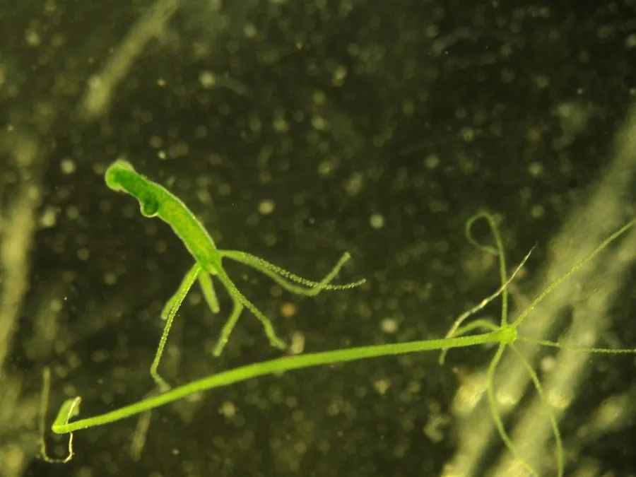

其他无脊椎动物 · 动物界
绿水螅 Hydra viridissima

体呈绿色的小型淡水水螅，体内共生绿藻，靠基盘附着于水草，以触手捕食小型甲壳类，受惊会缩成一团。
- 分类
- 门刺胞动物门纲水螅纲目水螅目科水螅科属水螅属
- 栖息环境
- 淡水池塘、湖泊、沟渠与缓流溪，附着于水草和石块上
- 地理分布
- 世界各地的淡水水体，中国南北方清水水体均可见
- 保护级别
- 尚无保护级别；水体污染会使其数量减少
物种志
绿水螅的体长约一至两厘米，身体呈细长的圆筒形，一端是基盘，能分泌黏液附着在水草和石块上，另一端是口盘，口的周围环生五至七条细长的触手。它的身体呈透明的绿色，这种绿来自体内共生的单细胞绿藻，绿藻通过光合作用为水螅提供部分养分，水螅则为绿藻提供庇护和代谢废物。
它分布于世界各地的淡水池塘、湖泊、沟渠和缓流溪中，在中国南北方的清水水体中都可见到，喜欢水质清洁、光照充足、水草丰茂的环境。它用触手上的刺细胞麻痹水蚤、剑水蚤和幼虫等小型甲壳类，再用触手送入口中。它没有性别分工的群体，平时靠基部的出芽生殖产生新个体，环境不利时进行有性生殖并形成休眠胚。它的再生能力极强，被切成数段后每段都能长成完整个体。它尚无保护级别，是淡水生态和再生研究中的经典实验动物，水体污染会使其数量减少。
形态与习性
- 体长约一至两厘米，圆筒形
- 触手口周环生五至七条细长触手
- 绿色体内共生单细胞绿藻，行光合作用
- 栖息环境淡水池塘、湖泊与水草丰茂的缓流
- 食性用刺细胞捕食水蚤等小型甲壳类
- 再生切成数段后每段都能长成完整个体
趣味知识
- 它的绿色不是自己的，而是体内养着一群绿藻。
- 把它切成几段，每一段都能重新长成一只完整的水螅。
- 它捕食时触手猛地一收，水蚤还没来得及挣扎就被送进嘴里。